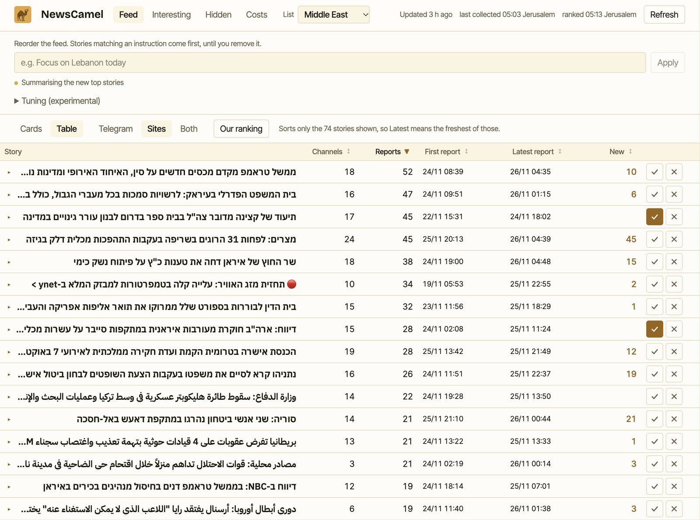

One ranked feed for the Arab-world news desk
NewsCamel reads Telegram channels and Arabic news sites twice a day. It groups the reports of one event into one story, whatever language they're in, and puts the stories that most sources carry, and carry recently, at the top.
Ask for a trial
What an editor gets
Stories, not posts
Reports of the same event in Arabic, Hebrew and English land in one story. You read the event once and open the sources when you need them.
Ranked by coverage
A story moves up when more channels report it and when the reports are fresh. Nothing older than a week stays on the page.
Your sources
Keep up to three lists of up to 100 sources each. Add any public Telegram channel, or any site with an RSS feed, by pasting its link.
Steer it in plain words
Type "more on Lebanon" or "no sports", in any language. The instruction keeps reordering your feed until you remove it.
It learns what you skip
Save a story or dismiss it, and similar stories move up or down. A dismissed story comes back, marked as developing, if its coverage doubles.
From saved stories to copy
Turn the stories you saved into a narration script or a newsletter draft, in English, Hebrew, Arabic or Russian, with a list of the sources behind it.
Want to try it on your desk?
NewsCamel is in an early trial. Write and tell me which region and sources you follow, and I'll set you up.
boris@loudcamel.com